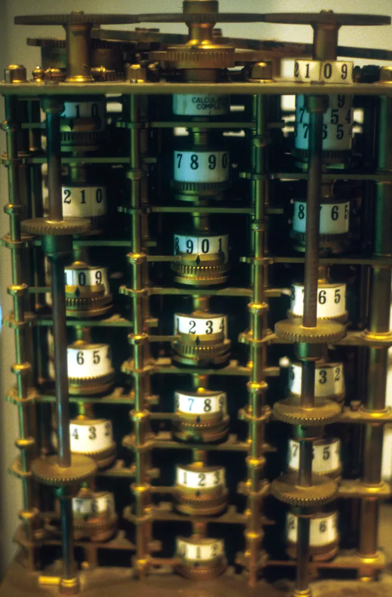

Zenith's Project
Charles Babage
About Me
Biography
Charles Babbage (December 26, 1791–October 18, 1871) was an English mathematician and inventor who is credited with having conceptualized the first digital programmable computer. Designed in 1821, Babbage’s “Difference Engine No. 1” was the first successful, error-free automatic calculating machine and is considered to be the inspiration for modern programmable computers. Often called the “Father of the Computer,” Babbage was also a prolific writer, with a wide number of interests including mathematics, engineering, economics, politics, and technology.
Machines Charles Babbage worked on

Difference Engine 1
Difference Engine 2